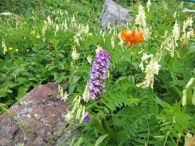
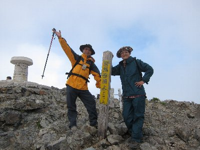
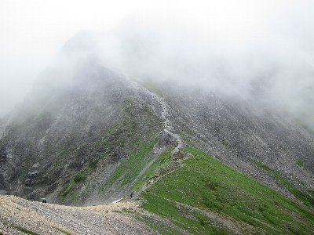
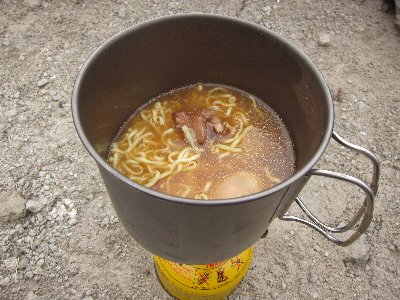

白馬岳登山 | 2013年8月 |
|---|---|
| 夏です！山、山に行きましょう！ 恒例となっている後輩との夏山登山です。今回は北アルプスの白馬岳です。「はくば」ではなく「しろうま」と読むのが正しいようです。 車で白馬岳玄関口の猿倉に日曜の未明（午前2時位）に到着。小さい駐車場は軽自動車も駐められないほど一杯です。ちょっと奥に臨時駐車場があり、そちらに駐めました。 夜空を見上げると、驚くほどの星空。こりゃ〜期待できるか。 仮眠している間に雨が降り出し、朝6時ぐらいは結構な降り。7時になったら雨もやんだので出発。白馬尻小屋を過ぎて、そろそろ雪渓に入ろうかと言うときに、またも雨が降り出しレインコートを着ました。 | |
 白馬尻小屋より。この正面を登っていきます |  雪渓はルートが決まっているので 狭い箇所は登り下りと交互通行です |
| アイゼンを付けても雪渓は歩きづらいですね。雪渓を過ぎた頃には雨もやみましたが、雲は厚そうです。 雪渓上部は時期が良いのか花畑状態。小さいけど色とりどりの花が咲いてますが、後輩は「綺麗ですね、早く行きましょう」となかなか立ち止まらせてくれません。 | |
 雪渓を過ぎ、もうすぐ尾根です |  花がいっぱいです |
| 14時位に白馬頂上宿舎に到着。本日はここのテント場でお世話になります。明日が平日だというのに、意外に人が多いです。 荷物を置いて白馬岳頂上へ。あいにくの曇り空で展望はよくありませんが、まあ仕方なし。時折、雲の合間から銚子岳方面が見えるのがカッコイイ。 テントへ戻って、ビールを頂き、夕食を食べて寝ました。 | |
|  白馬岳山頂 |  今日はチョット高いレトルトカレーとソーセージ |
| 夜中に何度か雨が降り、風でテントが煽られましたが、朝にはやんでくれて、テント撤収は何とか無事に済ませられました。周りは雨ではないモノの霧です。 朝食後、本日は銚子岳と白馬鑓ヶ岳に登り、これで白馬三山制覇です。 どちらとも霧というか雲の中。展望はありません。残念。 | |
 朝です。雲の中です |  雲がとぎれると山が格好良く見えます |
| ここから下山開始して、お昼は白馬鑓温泉小屋で昼食。温泉入りたかったが、「そんな時間はありません」と無情にも却下され、わざわざ廻ってきたのに温泉入らずです。なんとか足湯には入れました。 ここから猿倉に戻るのですが、このルートマジ勘弁って道でした。 道は狭く、木に囲まれて眺望はない、天気も悪く、時々雨が降るためレインコート着なきゃ行けないけど、晴れると暑い。オマケに標準で4時間掛かります。 さらに、後輩の登山靴、片方のソール（靴底）がめくれてしまい、今にも本体と靴底が泣き別れ状態でした。紐で縛りだましだまり歩いていました。もうすぐゴールと言うところで、もう片方も剥がれ落ちました。恐いですね〜 そんな、いいとこ無しみたいな感じですが、曇っていてもそれはそれで、違った風景が見られるから、面白かったですね。 | |
 白馬鑓ヶ岳から白馬鑓ヶ岳温泉小屋へ |  お昼はマルちゃん製麺 |
| 写真＆コメント by べっしー | |